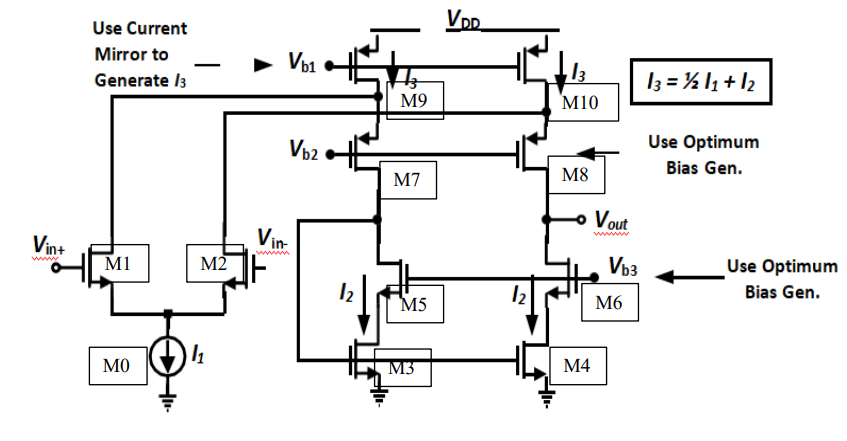

اللهم لا علم لنا الأ ما علمتنا به انك انت علام الغيوب
Introduction
Folded Cascode Operational Amplifier for non-Inverting Use

Operational Amplifier Model
New Solution(Gm over Id)
Requirement 1
Write a SPICE subcircuit that describes an op-amp with an open-loop gain of 1e4
and a UGF of 10MHz. Use comments generously to describe every line of the netlist.
Report the SPICE subcircuit and explain how you chose the circuit parameters.
Folded Cascode Operational Amplifier for Buffer Use
Operational Amplifier Model
specifications
\(V_{DD}=3.3V\)
\(V_{in,CM}={V_{DD} \over 2}=1.65V\)
\(A_{DC}>55dB\)(DC differential gain)
\(GBW>100MHz\)
\(SlewRate>100V/ \mu sec\)
\(Output Swing>1.5V_{PP}\)
\(Input \space referred \space thermal \space noise \space density < 10nV/\sqrt{Hz}\)
$${805mV}<{V_g \space of \space M_o}<{850mV}$$
if we choose max we will have max GBW and smallest phase margin and if we take min opposite will occur so it is better
to choose value in between like 830mV
Small Signal Analysis
Model Parameter Extraction neglecting short channel effects
\(K_n:16\mu A/V^2\)
\(Vth_{n} ~=620mV\)
\(K_p:6\mu A/V^2\)
\(Vth_{p} ~=630mV\)
\(L=1\mu m\)(Large L Bad merits of using this solution)